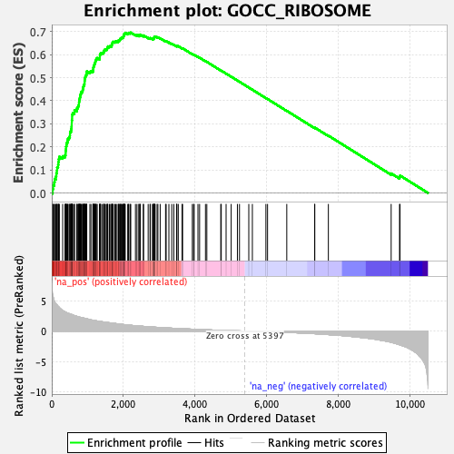
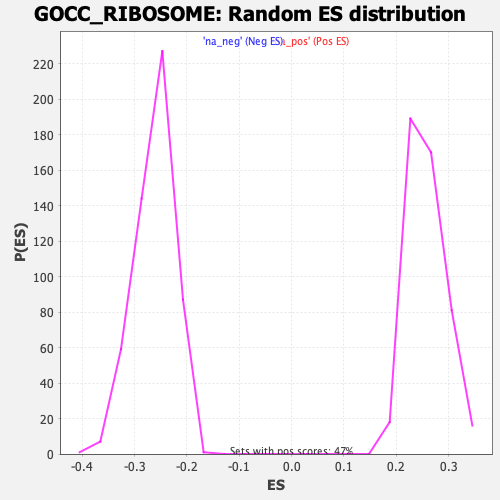

| Dataset | qlf.KOd4vsWTd4_gsea_score |
| Phenotype | NoPhenotypeAvailable |
| Upregulated in class | na_pos |
| GeneSet | GOCC_RIBOSOME |
| Enrichment Score (ES) | 0.69558764 |
| Normalized Enrichment Score (NES) | 2.7055824 |
| Nominal p-value | 0.0 |
| FDR q-value | 0.0 |
| FWER p-Value | 0.0 |

| SYMBOL | RANK IN GENE LIST | RANK METRIC SCORE | RUNNING ES | CORE ENRICHMENT | |
|---|---|---|---|---|---|
| 1 | LARP1 | 26 | 5.963 | 0.0167 | Yes |
| 2 | MRPL12 | 40 | 5.616 | 0.0336 | Yes |
| 3 | RPL7A | 71 | 4.969 | 0.0467 | Yes |
| 4 | RPL5 | 82 | 4.819 | 0.0613 | Yes |
| 5 | MRPL17 | 118 | 4.477 | 0.0724 | Yes |
| 6 | MRPL15 | 128 | 4.421 | 0.0858 | Yes |
| 7 | MRPS18B | 145 | 4.293 | 0.0981 | Yes |
| 8 | MRPS7 | 150 | 4.276 | 0.1115 | Yes |
| 9 | MRPL45 | 178 | 4.068 | 0.1220 | Yes |
| 10 | MRPL13 | 187 | 4.009 | 0.1342 | Yes |
| 11 | MRPS35 | 194 | 3.967 | 0.1464 | Yes |
| 12 | RSL24D1 | 212 | 3.885 | 0.1573 | Yes |
| 13 | RPL7L1 | 305 | 3.392 | 0.1593 | Yes |
| 14 | MRPL42 | 369 | 3.178 | 0.1635 | Yes |
| 15 | MRPL20 | 386 | 3.131 | 0.1720 | Yes |
| 16 | MRPS10 | 388 | 3.114 | 0.1820 | Yes |
| 17 | BTF3 | 396 | 3.088 | 0.1913 | Yes |
| 18 | RPS5 | 399 | 3.079 | 0.2010 | Yes |
| 19 | RPL6 | 410 | 3.044 | 0.2099 | Yes |
| 20 | RPL14 | 422 | 3.014 | 0.2186 | Yes |
| 21 | MRPL39 | 443 | 2.955 | 0.2262 | Yes |
| 22 | RPL29 | 450 | 2.937 | 0.2351 | Yes |
| 23 | MRPL38 | 482 | 2.881 | 0.2414 | Yes |
| 24 | MRPL35 | 506 | 2.827 | 0.2482 | Yes |
| 25 | RPS6 | 510 | 2.817 | 0.2571 | Yes |
| 26 | RPS27A | 513 | 2.815 | 0.2659 | Yes |
| 27 | MRPL19 | 540 | 2.776 | 0.2724 | Yes |
| 28 | RPS4X | 548 | 2.760 | 0.2806 | Yes |
| 29 | MRPS28 | 553 | 2.748 | 0.2891 | Yes |
| 30 | RPL15 | 557 | 2.721 | 0.2976 | Yes |
| 31 | MRPL1 | 559 | 2.713 | 0.3063 | Yes |
| 32 | RPS2 | 561 | 2.712 | 0.3149 | Yes |
| 33 | MRPS15 | 568 | 2.693 | 0.3230 | Yes |
| 34 | RPL10 | 569 | 2.692 | 0.3317 | Yes |
| 35 | MRPS34 | 570 | 2.690 | 0.3404 | Yes |
| 36 | RPL3 | 590 | 2.636 | 0.3471 | Yes |
| 37 | RPS8 | 634 | 2.532 | 0.3511 | Yes |
| 38 | RPLP0 | 635 | 2.532 | 0.3592 | Yes |
| 39 | RPL8 | 701 | 2.422 | 0.3608 | Yes |
| 40 | RPL7 | 704 | 2.420 | 0.3684 | Yes |
| 41 | MRPL49 | 730 | 2.355 | 0.3736 | Yes |
| 42 | DHX29 | 744 | 2.337 | 0.3798 | Yes |
| 43 | MRPL55 | 759 | 2.309 | 0.3859 | Yes |
| 44 | RPL36AL | 761 | 2.307 | 0.3933 | Yes |
| 45 | MRPL40 | 768 | 2.296 | 0.4001 | Yes |
| 46 | EIF2A | 773 | 2.292 | 0.4071 | Yes |
| 47 | MRPL47 | 785 | 2.273 | 0.4134 | Yes |
| 48 | MRPS17 | 795 | 2.264 | 0.4198 | Yes |
| 49 | RPL35A | 800 | 2.259 | 0.4267 | Yes |
| 50 | MRPL28 | 814 | 2.241 | 0.4327 | Yes |
| 51 | RPS12 | 826 | 2.224 | 0.4388 | Yes |
| 52 | RPL23 | 858 | 2.189 | 0.4429 | Yes |
| 53 | RPS27L | 866 | 2.179 | 0.4492 | Yes |
| 54 | MRPS22 | 875 | 2.165 | 0.4555 | Yes |
| 55 | RPL27 | 882 | 2.152 | 0.4618 | Yes |
| 56 | MRPS18A | 892 | 2.133 | 0.4678 | Yes |
| 57 | MRPL32 | 912 | 2.114 | 0.4728 | Yes |
| 58 | MRPL11 | 916 | 2.112 | 0.4793 | Yes |
| 59 | RPL27A | 918 | 2.109 | 0.4861 | Yes |
| 60 | RPL22L1 | 922 | 2.102 | 0.4926 | Yes |
| 61 | MRPL2 | 924 | 2.102 | 0.4992 | Yes |
| 62 | RPL11 | 939 | 2.074 | 0.5046 | Yes |
| 63 | PNPT1 | 951 | 2.066 | 0.5102 | Yes |
| 64 | MRPL22 | 969 | 2.033 | 0.5151 | Yes |
| 65 | RPS9 | 975 | 2.022 | 0.5211 | Yes |
| 66 | MRPS33 | 978 | 2.015 | 0.5275 | Yes |
| 67 | MTG1 | 1065 | 1.876 | 0.5252 | Yes |
| 68 | RPL12 | 1095 | 1.838 | 0.5283 | Yes |
| 69 | MRPL41 | 1149 | 1.785 | 0.5289 | Yes |
| 70 | RPS7 | 1153 | 1.780 | 0.5344 | Yes |
| 71 | RPL10A | 1160 | 1.770 | 0.5395 | Yes |
| 72 | RPL13 | 1162 | 1.769 | 0.5451 | Yes |
| 73 | MRPS27 | 1171 | 1.755 | 0.5500 | Yes |
| 74 | RPL21 | 1186 | 1.745 | 0.5543 | Yes |
| 75 | MRPL24 | 1193 | 1.738 | 0.5593 | Yes |
| 76 | RPS13 | 1205 | 1.722 | 0.5638 | Yes |
| 77 | RPL4 | 1216 | 1.713 | 0.5684 | Yes |
| 78 | MRPL51 | 1220 | 1.711 | 0.5736 | Yes |
| 79 | MRPS2 | 1237 | 1.691 | 0.5775 | Yes |
| 80 | RPL18 | 1245 | 1.682 | 0.5823 | Yes |
| 81 | RPS11 | 1270 | 1.657 | 0.5853 | Yes |
| 82 | RPS26 | 1339 | 1.591 | 0.5838 | Yes |
| 83 | MRPL37 | 1341 | 1.590 | 0.5889 | Yes |
| 84 | MRPL50 | 1343 | 1.590 | 0.5939 | Yes |
| 85 | RPS10 | 1344 | 1.589 | 0.5990 | Yes |
| 86 | RPL17 | 1358 | 1.576 | 0.6029 | Yes |
| 87 | RPL36A | 1368 | 1.566 | 0.6071 | Yes |
| 88 | RPS23 | 1412 | 1.528 | 0.6078 | Yes |
| 89 | MRPL3 | 1447 | 1.497 | 0.6094 | Yes |
| 90 | RPL9 | 1458 | 1.491 | 0.6132 | Yes |
| 91 | MRPL16 | 1460 | 1.489 | 0.6179 | Yes |
| 92 | RPS16 | 1477 | 1.472 | 0.6211 | Yes |
| 93 | RPL28 | 1501 | 1.454 | 0.6236 | Yes |
| 94 | RPS15 | 1541 | 1.420 | 0.6244 | Yes |
| 95 | MRPL46 | 1550 | 1.411 | 0.6282 | Yes |
| 96 | RPS25 | 1558 | 1.403 | 0.6320 | Yes |
| 97 | MRPL43 | 1568 | 1.398 | 0.6357 | Yes |
| 98 | RPLP1 | 1611 | 1.367 | 0.6360 | Yes |
| 99 | RPL19 | 1645 | 1.339 | 0.6371 | Yes |
| 100 | RRBP1 | 1673 | 1.318 | 0.6388 | Yes |
| 101 | RPL35 | 1677 | 1.315 | 0.6427 | Yes |
| 102 | RPL38 | 1684 | 1.311 | 0.6464 | Yes |
| 103 | MRPS14 | 1689 | 1.309 | 0.6502 | Yes |
| 104 | RPS17 | 1703 | 1.299 | 0.6531 | Yes |
| 105 | MRPL30 | 1719 | 1.287 | 0.6558 | Yes |
| 106 | MRPL18 | 1763 | 1.256 | 0.6557 | Yes |
| 107 | RPL31 | 1785 | 1.241 | 0.6577 | Yes |
| 108 | MRPS24 | 1822 | 1.206 | 0.6581 | Yes |
| 109 | RPS19 | 1859 | 1.177 | 0.6584 | Yes |
| 110 | MRPS9 | 1864 | 1.175 | 0.6618 | Yes |
| 111 | MRPS18C | 1895 | 1.157 | 0.6627 | Yes |
| 112 | MRPL53 | 1904 | 1.149 | 0.6656 | Yes |
| 113 | RPL23A | 1911 | 1.142 | 0.6687 | Yes |
| 114 | MRPL21 | 1930 | 1.129 | 0.6706 | Yes |
| 115 | DNAJC21 | 1945 | 1.117 | 0.6728 | Yes |
| 116 | RPS3 | 1964 | 1.104 | 0.6747 | Yes |
| 117 | EIF2AK4 | 1997 | 1.081 | 0.6751 | Yes |
| 118 | CANX | 1998 | 1.080 | 0.6785 | Yes |
| 119 | RPS24 | 2008 | 1.073 | 0.6811 | Yes |
| 120 | RPL24 | 2021 | 1.060 | 0.6834 | Yes |
| 121 | RPS20 | 2022 | 1.060 | 0.6868 | Yes |
| 122 | MRPS5 | 2023 | 1.060 | 0.6902 | Yes |
| 123 | MTG2 | 2043 | 1.047 | 0.6918 | Yes |
| 124 | MRPL27 | 2051 | 1.041 | 0.6945 | Yes |
| 125 | MTERF4 | 2122 | 0.996 | 0.6909 | Yes |
| 126 | RPS14 | 2142 | 0.988 | 0.6922 | Yes |
| 127 | RPL37 | 2153 | 0.983 | 0.6944 | Yes |
| 128 | APEX1 | 2191 | 0.964 | 0.6940 | Yes |
| 129 | RPL22 | 2207 | 0.951 | 0.6956 | Yes |
| 130 | MRPL23 | 2338 | 0.877 | 0.6858 | No |
| 131 | RPLP2 | 2380 | 0.860 | 0.6846 | No |
| 132 | RPL39 | 2435 | 0.837 | 0.6821 | No |
| 133 | SF1 | 2437 | 0.837 | 0.6847 | No |
| 134 | HSPA14 | 2467 | 0.818 | 0.6845 | No |
| 135 | RPL13A | 2472 | 0.817 | 0.6868 | No |
| 136 | RPS18 | 2559 | 0.772 | 0.6809 | No |
| 137 | MRPS12 | 2563 | 0.770 | 0.6831 | No |
| 138 | RPSA | 2693 | 0.719 | 0.6730 | No |
| 139 | DHX9 | 2745 | 0.694 | 0.6703 | No |
| 140 | RPS28 | 2753 | 0.690 | 0.6718 | No |
| 141 | MRPL48 | 2815 | 0.664 | 0.6680 | No |
| 142 | RPL32 | 2821 | 0.661 | 0.6697 | No |
| 143 | UBA52 | 2849 | 0.650 | 0.6692 | No |
| 144 | RPS21 | 2853 | 0.648 | 0.6710 | No |
| 145 | MRPL36 | 2857 | 0.646 | 0.6728 | No |
| 146 | MRPS36 | 2860 | 0.645 | 0.6747 | No |
| 147 | RPL36 | 2865 | 0.643 | 0.6764 | No |
| 148 | MRPL54 | 2873 | 0.639 | 0.6777 | No |
| 149 | RPL41 | 2888 | 0.631 | 0.6784 | No |
| 150 | NDUFA7 | 2942 | 0.615 | 0.6753 | No |
| 151 | MRPS16 | 2965 | 0.607 | 0.6751 | No |
| 152 | RPS15A | 3029 | 0.587 | 0.6709 | No |
| 153 | NUFIP2 | 3179 | 0.534 | 0.6582 | No |
| 154 | RPL18A | 3196 | 0.527 | 0.6583 | No |
| 155 | MRPL14 | 3272 | 0.500 | 0.6527 | No |
| 156 | MRPS26 | 3352 | 0.474 | 0.6465 | No |
| 157 | RPS27 | 3409 | 0.458 | 0.6426 | No |
| 158 | MRPL44 | 3488 | 0.433 | 0.6364 | No |
| 159 | RPL34 | 3491 | 0.432 | 0.6376 | No |
| 160 | SERP1 | 3494 | 0.431 | 0.6388 | No |
| 161 | NSUN4 | 3534 | 0.419 | 0.6364 | No |
| 162 | FXR2 | 3640 | 0.386 | 0.6275 | No |
| 163 | ZCCHC17 | 3655 | 0.381 | 0.6274 | No |
| 164 | RPS29 | 3927 | 0.310 | 0.6021 | No |
| 165 | MRPL4 | 3961 | 0.300 | 0.5999 | No |
| 166 | RPS6KL1 | 3978 | 0.296 | 0.5993 | No |
| 167 | MRPS21 | 4084 | 0.268 | 0.5900 | No |
| 168 | LARP4B | 4130 | 0.257 | 0.5864 | No |
| 169 | MRPL34 | 4294 | 0.219 | 0.5714 | No |
| 170 | MRPS11 | 4332 | 0.211 | 0.5685 | No |
| 171 | SRP68 | 4721 | 0.120 | 0.5313 | No |
| 172 | MPV17L2 | 4735 | 0.117 | 0.5304 | No |
| 173 | MRPS30 | 4870 | 0.093 | 0.5177 | No |
| 174 | MRPL52 | 5012 | 0.068 | 0.5042 | No |
| 175 | RPL37A | 5186 | 0.038 | 0.4876 | No |
| 176 | MRPL10 | 5244 | 0.029 | 0.4822 | No |
| 177 | DAP3 | 5504 | -0.016 | 0.4571 | No |
| 178 | MRPL57 | 5604 | -0.033 | 0.4477 | No |
| 179 | EIF3H | 5982 | -0.094 | 0.4114 | No |
| 180 | MRPL9 | 6028 | -0.102 | 0.4074 | No |
| 181 | NCK1 | 6565 | -0.213 | 0.3562 | No |
| 182 | MRPL33 | 7345 | -0.434 | 0.2821 | No |
| 183 | NSUN3 | 7346 | -0.434 | 0.2835 | No |
| 184 | MRPS6 | 7727 | -0.581 | 0.2486 | No |
| 185 | ISG15 | 9481 | -1.846 | 0.0847 | No |
| 186 | EIF2AK2 | 9715 | -2.252 | 0.0694 | No |
| 187 | B3GALT4 | 9729 | -2.277 | 0.0755 | No |
